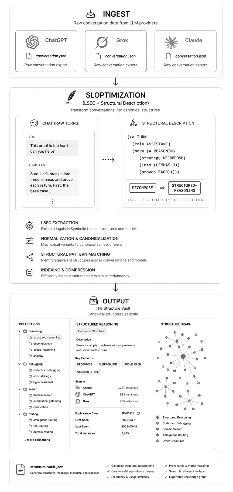
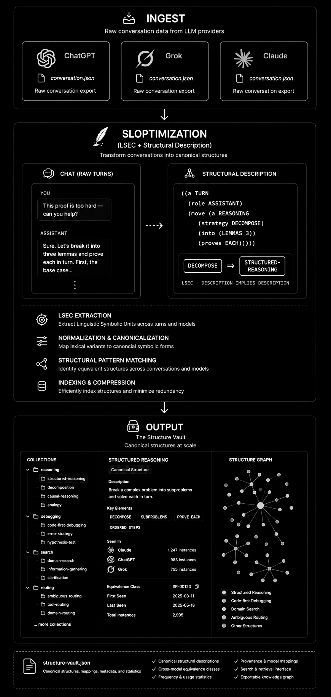

A deterministic symbolic knowledge system for LLM conversation exports. Turns chat histories from ChatGPT, Claude, and Grok into a cross-linked Obsidian vault backed by a symbolic extensional database.
Based on David E. Shaw's 1980 dissertation on conceptual matching: Knowledge-Based Retrieval on a Relational Database Machine.
Getting Started
- Download and open Afterslop.
- Export your tutoring sessions (ChatGPT, Claude, or Grok) and put the zip files in one folder.
- Drag the zips into the app window.
- Choose donny (local Llama via proxy) and click Start Local Proxy.
- Run the pipeline and wait for it to finish.
- Press Cmd + L to open the agent chat and start exploring.
Background
Afterslop is a tool for collecting and organizing model behaviors from LLM export data.
It turns your exported conversations into a usable knowledge base in the following way:
- It creates an Obsidian-style vault from all the conversations you import, across ChatGPT, Claude, and Grok.
- Each individual exchange (a turn) gets its own file and a formal description that captures the underlying structure of what happened.
- These structured descriptions allow a conceptual matching algorithm to run across your data. Instead of relying on keywords or embedding similarity, the system can find turns that are related at the level of their logical structure.
- The matching approach is inspired by David E. Shaw's doctoral thesis on knowledge-based retrieval on relational databases.
The key idea behind the system is that the turn, not the full conversation thread, is the right unit of analysis for analyzing user-LLM interactions. Tasking usually happens at the level of individual turns. Because the real value in most tutoring work lives at that granular level, giving each turn a structured description makes certain conceptual patterns visible and comparable in ways that would otherwise be hard to find.
A useful way to understand how the matching works is "description implies description." For example, if a turn is described as the model breaking a hard problem into smaller steps and solving them one by one, the matching rules can recognize that this turn also counts as an example of structured reasoning — even if those exact words were never used. The formal descriptions let the system draw these connections automatically. The plate at right walks one turn through exactly this path: ingest, sloptimization, and out into the Structure Vault.
Workflow
Here's a practical way most tutors use Afterslop:
- Export your data — Export the conversations you want to work with from any provider and put the zip files in one folder.
- Open Afterslop and drop the files — Drag the zips into the app window. It will detect the providers automatically.
- Choose a description provider — donny (local Llama 3.1-8B via the built-in proxy) is the easiest and cheapest way to start. Grok models generally give sharper descriptions but cost tokens.
- Start the local proxy (if using donny) — Click the button to launch the local model server.
- Run the pipeline — Let the app process your files. This is the longest step.
- Use the agent chat (
Cmd + L) to explore and organize what you found.
Using the agent chat effectively
Grok 4.3 is currently one of the strongest models for writing good search patterns in the agent. When asking it to find examples or create collections, give it clear instructions so it doesn't overly restrict the results. Useful prompts often include lines like:
- "Write a broad pattern that catches as many relevant cases as possible, even if some results are noisy."
- "Prioritize recall over precision for now — I can refine afterward."
- "Avoid adding too many extra constraints that would make the results too narrow."
- "Return the full list of matches rather than summarizing or truncating."
Notes
- The normal Grok models (especially Grok 4.3 and Grok 4 Fast) work reliably in the agent chat for finding patterns and saving collections.
- The deeper "Grok Build" integration inside the desktop app is currently not working well. If you want the full visible-reasoning experience, it's currently better to use the main Grok Build interface together with the CLI tools.
- The local model (
donny) is the lowest-friction way to get started. The quality is good enough for a lot of collection-building work. - You can always re-run the pipeline later with a stronger model if you want higher-quality descriptions on the same data.

